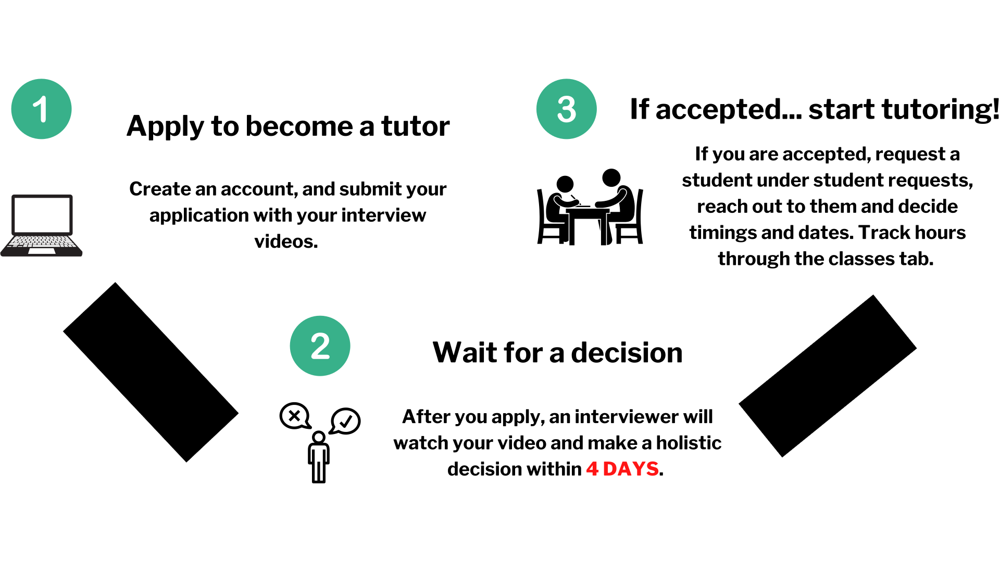

Why should I become a tutor?
- Volunteer Hours - Educationist Tutoring has 501c3 status, allowing us to give out volunteering hours that can be used for fulfill certain club requirements, such as NHS, Boy/Girl scouts, or in college applications. Going to competitive colleges requires you to stand out from everyone else and volunteering hours is a fantastic way of doing so, and Educationist Tutoring can let you get those hours!
- Academic Performance - In order to teach a subject, a tutor must understand the subject first. By becoming a tutor and reading through our premade slideshows, you can brush up on certain subjects you might be unsure on. For example, teaching an Algebra 1 course will make you review those concepts in order to teach, ensuring you also have a good understanding
- Community - Something we pride ourselves on is emphasizing our community. We have a a tutor discord where tutors come together to talk with others and executives to make a better tutoring community. We love feedback and are always willing to listen to the concerns of tutors. We even hold monthly meetings with our tutors to keep them updated and so we can get suggestion on how to improve.
What are the requirements?
- Age - You must be at least 14 years old to tutor with Educationist. We made this decision because we want to make sure that students get the best tutors will still having access. We don't want tutors that are too young and unable to teach students.
- Interview Videos - The main way we judge your application is through the video that you send us in your respective subjects. Seeing your performance in teaching and the different strategies you use to teach students will help us make a decision in your application.
- Commitment - If you are accepted and are matched with a student, you must be committed with your student with the timings and dates you decide. If you decide you can't tutor anymore, let your student know 1 week in advance to ease the transition of finding another tutor.